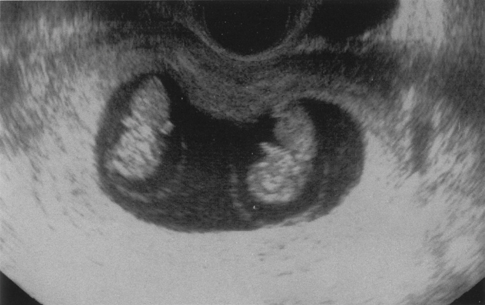
| 選択肢 | 評価 |
|---|---|
| ａ 骨髄 | 胎児の造血の場だがTTTSの原因ではない |
| ｂ 臍帯 | 臍帯付着異常（辺縁付着・卵膜付着）はFGRの一因となるがTTTSの原因ではない |
| ｃ 子宮 | 子宮形態異常は流産・早産の一因だがTTTSとは無関係 |
| ｄ 胎盤 | 正しい。共有胎盤内の血管吻合（動静脈吻合）が病因 |
| ｅ 羊膜 | MD双胎の隔壁は羊膜2枚だが、羊膜自体は輸血の経路にならない |
| 膜性 | 胎盤 | 隔壁 | 超音波所見 | 成因 | 周産期リスク |
|---|---|---|---|---|---|
| 2絨毛膜2羊膜〈DD〉 | 2個 | 2枚（羊膜2＋絨毛膜2）で厚い | λ sign（twin peak sign） | 2卵性すべて＋1卵性の約25%（受精後3日以内の分裂） | 最も低い |
| 1絨毛膜2羊膜〈MD〉 | 1個（共有） | 2枚（羊膜のみ）で薄い | T sign | 1卵性の約75%（受精後4〜7日の分裂） | TTTS・sIUGR |
| 1絨毛膜1羊膜〈MM〉 | 1個（共有） | なし | 隔壁なし | 1卵性の約1%（受精後8〜13日の分裂） | 臍帯相互巻絡（最も高リスク） |
| 選択肢 | 評価 |
|---|---|
| ａ 甲状腺機能検査 | 適切。甲状腺機能低下症・亢進症は流産の原因となる |
| ｂ 子宮頸管長測定 | 適切でない。妊娠中期の後期流産・早産の評価法。早期流産の反復には無関係 |
| ｃ 子宮卵管造影検査 | 適切。子宮形態異常（中隔子宮等）の検索 |
| ｄ 抗リン脂質抗体測定 | 適切。不育症の代表的原因 |
| ｅ カップルの染色体検査 | 適切。均衡型転座保因者の検索 |
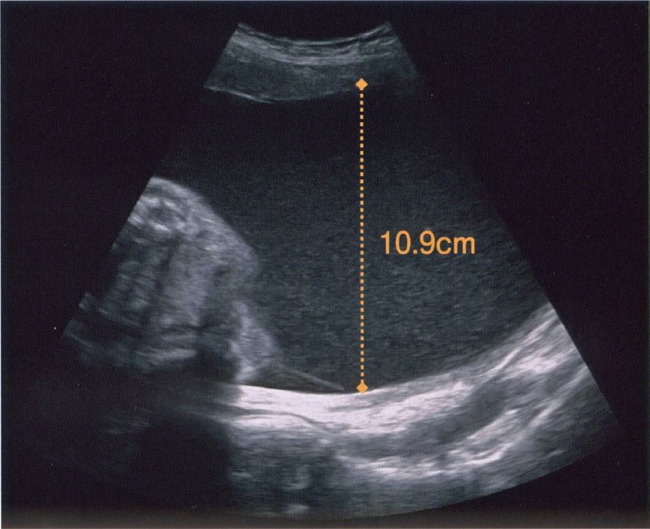
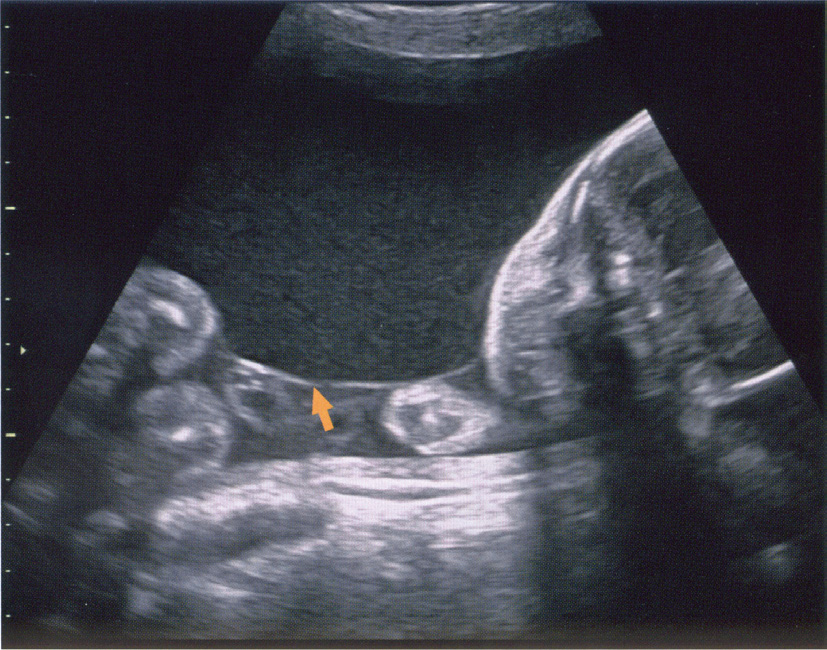
| 選択肢 | 評価 |
|---|---|
| ａ 貧血になっている。 | 誤り。受血児は多血症。貧血は供血児 |
| ｂ 高血糖になっている。 | 誤り。TTTSは血糖の異常を来す病態ではない |
| ｃ 腎血流が増加している。 | 正しい。循環血液量↑ → 腎血流↑ → 尿量↑ → 羊水過多 |
| ｄ 胎児発育不全になりやすい。 | 誤り。FGRになりやすいのは供血児 |
| ｅ うっ血性心不全になっている。 | 正しい。容量負荷 → 心拡大 → 心不全 → 胎児水腫 |
| 選択肢 | 評価 |
|---|---|
| ａ 頸管縫縮術 | 正しい。妊娠12〜16週に予防的に施行 |
| ｂ NSAID 投与 | 不適切。子宮収縮抑制作用はあるが胎児動脈管収縮のため用いない。そもそも本例は子宮収縮が病因ではない |
| ｃ β2 刺激薬投与 | 不適切。子宮収縮抑制薬。頸管無力症は無痛性＝子宮収縮を伴わないため無効 |
| ｄ マグネシウム製剤投与 | 不適切。切迫早産の子宮収縮抑制や子癇予防に用いる |
| ｅ 副腎皮質ステロイド投与 | 不適切。胎児肺成熟促進（妊娠22〜34週）。妊娠13週の時点で適応はない |
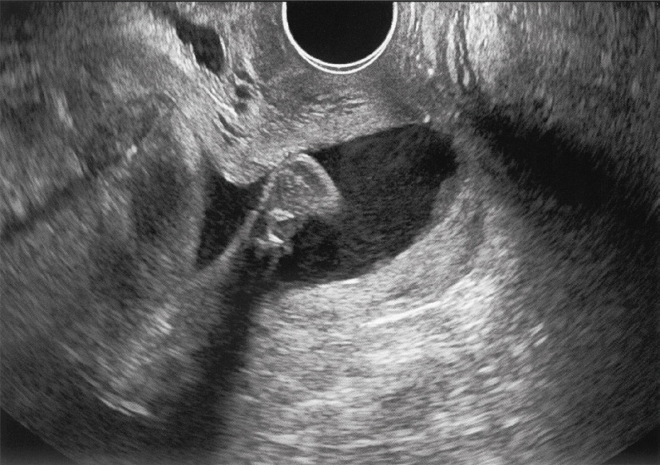
| 選択肢 | 評価 |
|---|---|
| ａ 外回転術 | 不適切。骨盤位を頭位に矯正する手技で、妊娠36〜37週に行う。妊娠23週の足位は自然に回転しうる |
| ｂ 緊急帝王切開 | 不適切。胎児機能不全・母体適応がない。妊娠23週での分娩は児の予後が極めて不良 |
| ｃ 子宮頸管縫縮術 | 不適切。すでに子宮収縮と出血があり、感染や破水のリスクが高い状態での縫縮は禁忌に近い。予防的縫縮は妊娠12〜16週 |
| ｄ β2 刺激薬の点滴静注 | 正しい。まず子宮収縮を抑制し妊娠を延長させる |
| ｅ 副腎皮質ステロイドの筋注 | 妊娠23週4日は投与を考慮する週数だが、効果発現に24〜48時間かかるため、まず子宮収縮抑制薬で時間を稼ぐのが順序 |
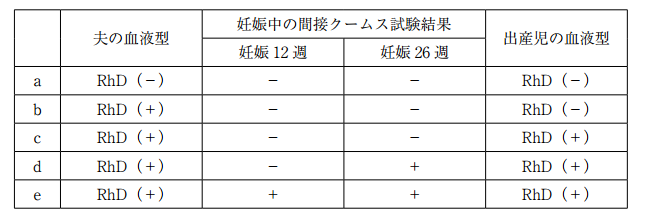
| 選択肢 | 夫の血液型 | 間接Coombs 12週／26週 | 出産児 | 評価 |
|---|---|---|---|---|
| ａ | RhD（－） | （－）／（－） | RhD（－） | 不要。児がRhD陰性で感作は起こらない |
| ｂ | RhD（＋） | （－）／（－） | RhD（－） | 不要。夫が陽性でも実際の出生児がRhD陰性なら感作されない |
| ｃ | RhD（＋） | （－）／（－） | RhD（＋） | 必要。未感作の母体＋RhD陽性児 → 分娩後72時間以内に投与 |
| ｄ | RhD（＋） | （－）／（＋） | RhD（＋） | 不要。妊娠26週で間接Coombsが陽転＝すでに感作されている。予防投与の意味がない |
| ｅ | RhD（＋） | （＋）／（＋） | RhD（＋） | 不要。妊娠12週から陽性＝妊娠前から感作されている |
| 選択肢 | 評価 |
|---|---|
| ａ ①（体外受精-胚移植） | 不要。妊娠方法はTTTSの診断に関与しない |
| ｂ ②（1絨毛膜2羊膜双胎） | 必要。1絨毛膜性がTTTSの絶対条件 |
| ｃ ③（推定胎児体重の差20%） | 不要。診断基準に含まれない。体重差主体ならsIUGR |
| ｄ ④（最大羊水深度 8cm と 2cm） | 必要。羊水量の不均衡が診断の核心 |
| ｅ ⑤（子宮頸管長25mm） | 不要。切迫早産のリスク評価であり、TTTSの診断とは無関係 |
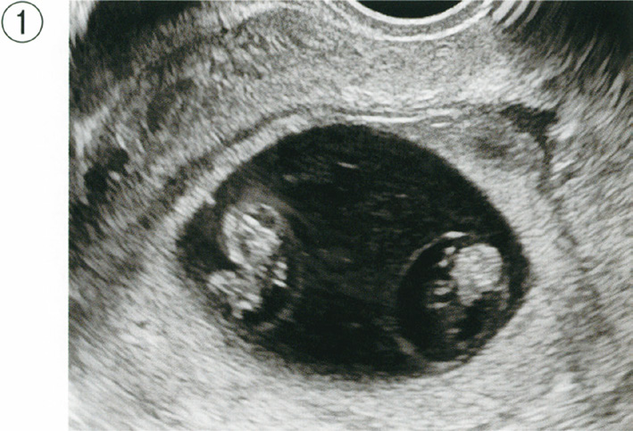
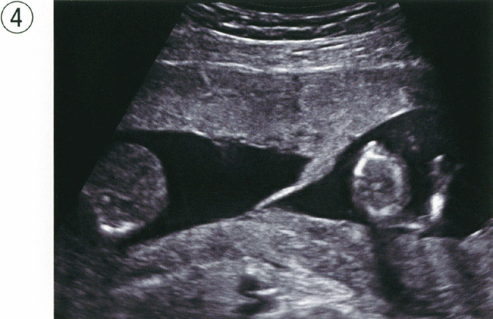
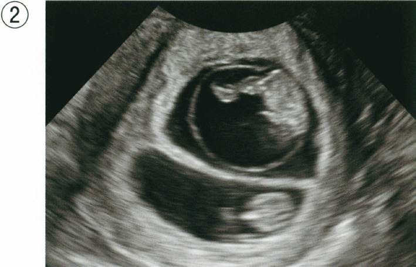
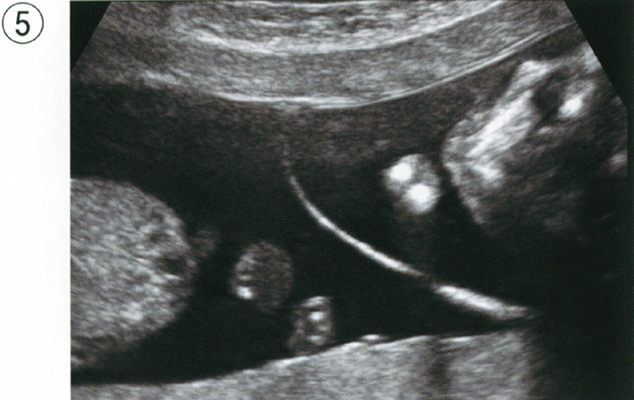
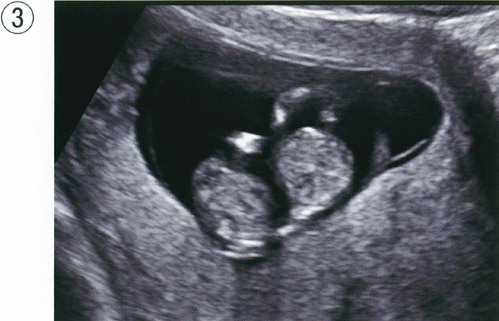
| 膜性 | 胎盤 | 隔壁 | 超音波所見 | 成因 | 周産期リスク |
|---|---|---|---|---|---|
| 2絨毛膜2羊膜〈DD〉 | 2個 | 2枚（羊膜2＋絨毛膜2）で厚い | λ sign（twin peak sign） | 2卵性すべて＋1卵性の約25%（受精後3日以内の分裂） | 最も低い |
| 1絨毛膜2羊膜〈MD〉 | 1個（共有） | 2枚（羊膜のみ）で薄い | T sign | 1卵性の約75%（受精後4〜7日の分裂） | TTTS・sIUGR |
| 1絨毛膜1羊膜〈MM〉 | 1個（共有） | なし | 隔壁なし | 1卵性の約1%（受精後8〜13日の分裂） | 臍帯相互巻絡（最も高リスク） |
| 選択肢 | 評価 |
|---|---|
| ａ 体温 | 有用。母体発熱はCAMの主要な診断基準 |
| ｂ 内診 | 有用。子宮口の開大度、腟分泌物の性状・悪臭、頸管培養 |
| ｃ 尿検査 | 有用性が低い。絨毛膜羊膜炎の診断にも胎児well-beingの評価にもならない。尿路感染の合併を疑う場合を除き、妊娠継続の可否を左右しない |
| ｄ 腹部触診 | 有用。子宮の圧痛（CAM）、子宮収縮の頻度、胎位の確認 |
| ｅ 血液検査 | 有用。白血球数・CRPで炎症を評価 |
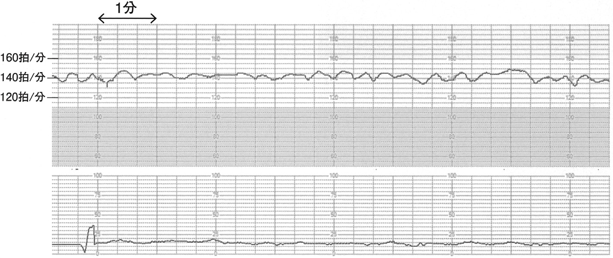
| 選択肢 | 評価 |
|---|---|
| ａ 母体の血清LD 値を調べる。 | 無意味。溶血しているのは胎児であって母体ではない |
| ｂ 胎児水腫の有無を確認する。 | 正しい。胎児貧血の重症度・緊急度の判定 |
| ｃ 母体のヘモグロビン値を調べる。 | 無意味。母体は貧血にならない |
| ｄ 抗D 人免疫グロブリンを投与する。 | 無意味。すでに感作された母体には予防効果がない |
| ｅ 胎児中大脳動脈血流速度を計測する。 | 正しい。胎児貧血の非侵襲的評価法 |
| 選択肢 | 評価 |
|---|---|
| ａ 塩分摂取制限 | 無効。羊水量は母体の塩分・水分摂取では変わらない |
| ｂ 経腹的羊水除去 | 正しい。子宮内圧を下げて子宮収縮を軽減 |
| ｃ ループ利尿薬投与 | 無効。母体の利尿は羊水量（＝胎児尿）を減らさない。母体の循環血漿量を減らせば胎盤血流が低下し有害 |
| ｄ プロスタグランディンF2α投与 | 禁忌。子宮収縮薬であり、切迫早産を助長する（陣痛促進・分娩誘発に用いる薬） |
| ｅ NSAIDs 投与 | 不適切。PG合成阻害により胎児腎血流を減らして羊水を減少させる作用はあるが、胎児動脈管の収縮・早期閉鎖を招くため妊娠後期には用いない |
| 機序 | 原因疾患 |
|---|---|
| 胎児が嚥下できない | 食道閉鎖・十二指腸閉鎖・無脳症・重症筋無力症 |
| 胎児の尿が多い | 母体糖尿病（胎児高血糖 → 浸透圧利尿）、双胎間輸血症候群の受血児 |
| その他 | 胎児水腫、胎児胸腔内腫瘤 |
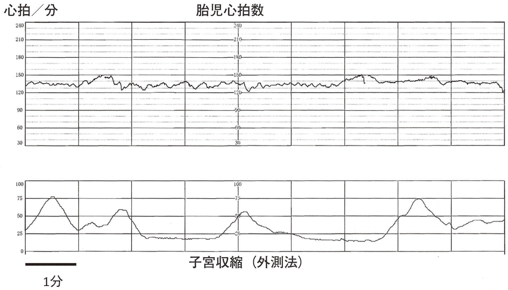
| 選択肢 | 評価 |
|---|---|
| ａ 経過観察 | 不適切。頸管長12mm・funneling・規則的子宮収縮があり、放置すれば早産に至る |
| ｂ 経腹的羊水除去 | 過剰。AFI 28cmは軽度の羊水過多にとどまり、これが子宮収縮の主因とはいえない。穿刺は破水・感染・常位胎盤早期剝離のリスクを伴う（Q156のAFI 38cmとは重症度が異なる） |
| ｃ 子宮頸管縫縮術 | 不適切。すでに子宮収縮と産徴があり、この時期の縫縮は破水・感染を招く。予防的縫縮は妊娠12〜16週 |
| ｄ 子宮収縮抑制薬の点滴静注 | 正しい |
| ｅ 帝王切開術 | 不適切。胎児機能不全・母体適応がなく、妊娠27週での分娩は児の未熟性による予後不良を招く |
| 選択肢 | 評価 |
|---|---|
| ａ 薬剤投与は行わない | 誤り。分娩後の投与が必要 |
| ｂ アルブミン投与 | 無関係。低アルブミン血症の補正に用いる |
| ｃ ハプトグロビン投与 | 無関係。血管内溶血で遊離ヘモグロビンによる腎障害を防ぐ薬 |
| ｄ 副腎皮質ステロイド投与 | 無関係。感作の予防にはならない |
| ｅ 抗D 人免疫グロブリン投与 | 正しい。分娩後72時間以内 |
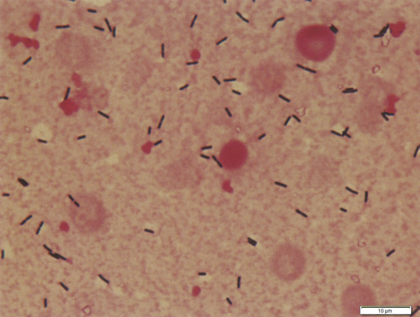
| 選択肢 | 評価 |
|---|---|
| ａ アンピシリンに変更する。 | 正しい。リステリアの第一選択 |
| ｂ 感受性試験結果が出るまでセフトリアキソンを継続する。 | 不適切。リステリアはセフェム系に自然耐性であり、無効な薬剤を継続すれば胎児死亡に至る |
| ｃ セフトリアキソンを中止して経過を観察する。 | 論外。菌血症の無治療は致死的 |
| ｄ メロペネムに変更する。 | リステリアに活性はあるが第一選択ではない。広域抗菌薬の乱用も避ける |
| ｅ レボフロキサシンに変更する。 | 不適切。キノロン系は妊婦に避ける |
| 選択肢 | 評価 |
|---|---|
| ａ 経過観察 | 誤り。感作の機会を逃すと次回妊娠で胎児溶血性疾患を招く |
| ｂ 直接Coombs 試験 | 不適切。直接Coombsは児の赤血球に付着した抗体を検出する検査。母体のスクリーニングは間接Coombs |
| ｃ ハプトグロビン投与 | 無関係 |
| ｄ 抗ヒトRhD 抗体投与 | 正しい。抗D人免疫グロブリンのこと |
| ｅ 副腎皮質ステロイド投与 | 無関係 |
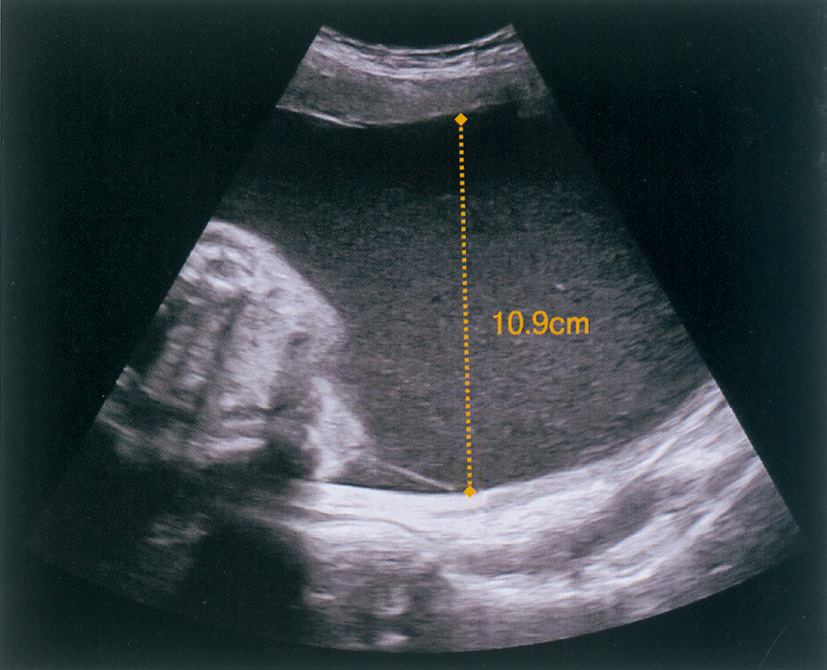
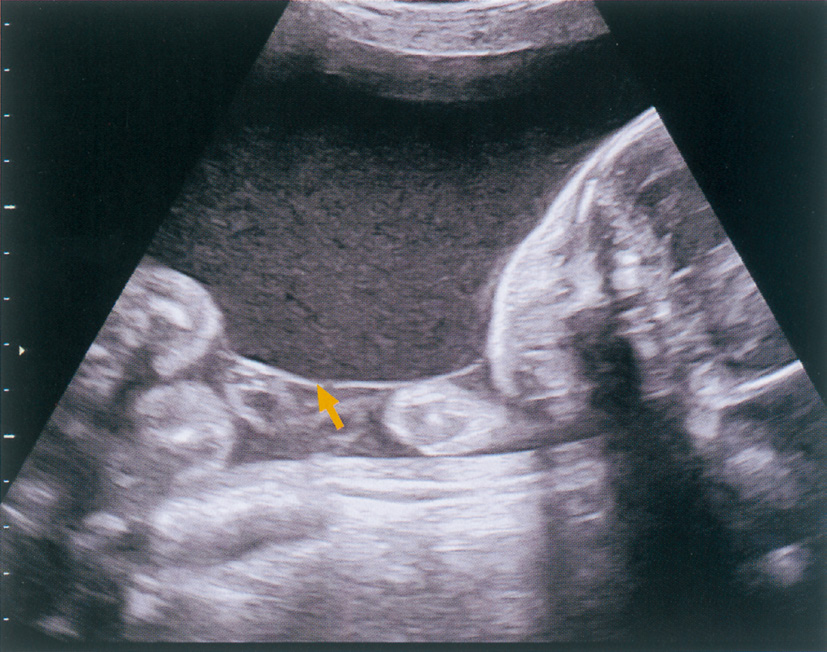
| 選択肢 | 評価 |
|---|---|
| ａ 貧血である。 | 誤り。受血児は多血症。貧血は供血児 |
| ｂ 羊水過多がある。 | 正しい。尿量増加による |
| ｃ 第2 児との間に血管吻合がある。 | 正しい。1絨毛膜性＝胎盤を共有し血管吻合が存在。TTTSの前提 |
| ｄ 第2 児と比較して胎児水腫になりやすい。 | 正しい。容量負荷 → 心不全 → 胎児水腫 |
| ｅ 第2 児と比較して胎児発育不全になりやすい。 | 誤り。FGRになりやすいのは供血児（第2児） |
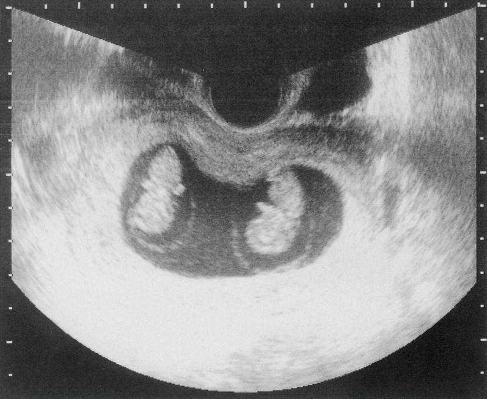
| 選択肢 | 評価 |
|---|---|
| ａ 「2 人の胎盤は別々になります」 | 誤り。1絨毛膜性なので胎盤は1個を共有する |
| ｂ 「2 人の性別は異なることが多いです」 | 誤り。1絨毛膜性は必ず1卵性なので性別は必ず同一 |
| ｃ 「2 人の羊水の量に差が出る可能性があります」 | 正しい。双胎間輸血症候群〈TTTS〉のリスク |
| ｄ 「2 人の間は羊膜という膜で隔てられています」 | 正しい。MD双胎の隔壁は羊膜2枚からなる |
| ｅ 「2 人の臍帯が互いに絡み合う危険性があります」 | 誤り。臍帯相互巻絡は1絨毛膜1羊膜〈MM〉双胎のリスク。本例は羊膜で隔てられており起こらない |
| 膜性 | 胎盤 | 胎囊（絨毛膜） | 羊膜 | 臍帯 | 胎児 |
|---|---|---|---|---|---|
| 2絨毛膜2羊膜〈DD〉 | 2個 | 2個 | 2個 | 2本 | 2人 |
| 1絨毛膜2羊膜〈MD〉 | 1個 | 1個 | 2個 | 2本 | 2人 |
| 1絨毛膜1羊膜〈MM〉 | 1個 | 1個 | 1個 | 2本 | 2人 |
| 選択肢 | 評価 |
|---|---|
| ａ 臍帯 | 常に2本。胎盤が1個でも2本 |
| ｂ 胎芽 | 常に2個 |
| ｃ 胎児 | 常に2人 |
| ｄ 胎囊 | 正しい。胎囊＝絨毛膜腔なので胎盤の数と一致 |
| ｅ 羊膜 | 一致しない。MD双胎では羊膜2枚に対し胎盤1個 |
| 選択肢 | 評価 |
|---|---|
| ａ 脳 | 羊水過少で直接障害されない |
| ｂ 肺 | 正しい。肺低形成 |
| ｃ 肝臓 | 羊水過少と無関係 |
| ｄ 小腸 | 羊水過少と無関係 |
| ｅ 心臓 | 羊水過少と無関係 |
| 選択肢 | 評価 |
|---|---|
| ａ 動脈管 | 動脈管の血流計測はNSAIDsによる収縮の評価に用いる |
| ｂ 静脈管 | 静脈管の逆行性a波は胎児心不全の重症度評価に用いるが、貧血の一次評価ではない |
| ｃ 臍帯動脈 | 臍帯動脈のPI・RIは胎盤血管抵抗（胎盤機能不全・FGR）の評価 |
| ｄ 臍帯静脈 | 拍動性の臍帯静脈波形は重症胎児機能不全を示すが、貧血の評価法ではない |
| ｅ 中大脳動脈 | 正しい。MCA-PSVで胎児貧血を評価 |
| 選択肢 | 評価 |
|---|---|
| ａ 経過観察 | 誤り。次回妊娠での胎児溶血性疾患を防ぐため投与が必要 |
| ｂ アルブミン投与 | 無関係 |
| ｃ ハプトグロビン投与 | 無関係 |
| ｄ 副腎皮質ステロイド投与 | 無関係 |
| ｅ 抗D 人免疫グロブリン投与 | 正しい |
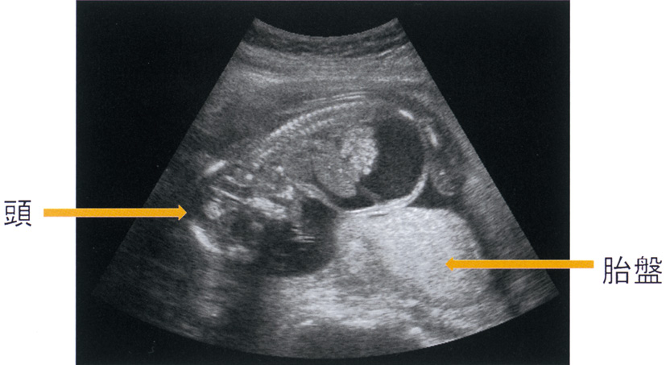
| 所見 | 超音波像 |
|---|---|
| 水頭症 | 側脳室の拡大（10mm以上）。脳実質の菲薄化。BPDの増大 |
| 肺低形成 | 直接描出は困難。胸郭の狭小化・心胸郭比の増大で推定する |
| 腹水貯留 | 腹腔内臓器を取り囲む無エコー域（本問） |
| 消化管拡張 | 十二指腸閉鎖ではdouble bubble sign（胃胞と拡大した十二指腸）。羊水過多を伴う |
| 臍帯ヘルニア | 臍帯基部（正中）に膜に覆われた腹腔内臓器の脱出。妊娠12週以降も残存すれば病的 |
| 選択肢 | 評価 |
|---|---|
| ａ 鎖肛 | 最も困難。羊水過多も消化管拡張も来しにくい |
| ｂ 水腎症 | 腎盂の拡張として描出しやすい |
| ｃ 卵巣囊腫 | 下腹部の囊胞性腫瘤として描出しやすい |
| ｄ 横隔膜ヘルニア | 胸腔内の腹部臓器・心臓の偏位として描出しやすい |
| ｅ 十二指腸閉鎖症 | double bubble sign＋羊水過多で診断しやすい |
| 選択肢 | 評価 |
|---|---|
| ａ 絨毛検査 | 胎児細胞の染色体・遺伝子検査。貧血は評価できない |
| ｂ 羊水マイクロバブルテスト | 胎児肺成熟度の評価（L/S比と同様） |
| ｃ 無侵襲的出生前遺伝学的検査 | 母体血中cell-free DNAによる13・18・21トリソミーのスクリーニング |
| ｄ 胎児中大脳動脈血流速度計測 | 正しい。MCA-PSVの上昇で胎児貧血を診断 |
| ｅ 母体血清AFP 値測定 | 開放性神経管閉鎖障害・腹壁破裂で上昇。クアトロテストの一項目。貧血の評価にはならない |
| 選択肢 | 評価 |
|---|---|
| ａ 前置胎盤 | 無痛性・無熱性の性器出血が特徴 |
| ｂ 細菌性腟症 | 腟内の菌叢異常（Lactobacillus減少、Gardnerella等の増加）。灰白色・魚臭の帯下を呈するが炎症所見に乏しく発熱しない |
| ｃ 子宮頸管炎 | クラミジア・淋菌による。膿性帯下・接触出血。局所の炎症であり通常は発熱しない |
| ｄ 絨毛膜羊膜炎 | 正しい。母体発熱が診断基準の中心 |
| ｅ 胎盤機能不全 | FGR・羊水過少・胎児機能不全を来すが発熱はしない |
| 選択肢 | 評価 |
|---|---|
| ａ 硝酸薬 | 血管拡張薬（狭心症）。子宮収縮抑制作用は乏しい |
| ｂ α刺激薬 | 逆効果。血管収縮・子宮収縮を招く |
| ｃ β2 刺激薬 | 正しい。塩酸リトドリン。切迫早産の第一選択 |
| ｄ 抗コリン薬 | 過活動膀胱・消化管の攣縮に用いる。子宮収縮抑制作用はない |
| ｅ 副腎皮質ステロイド | 妊娠22〜34週で早産が予測される場合の胎児肺成熟促進に用いるが、子宮収縮を抑える「治療薬」ではない |
| 病原体 | 児への影響 |
|---|---|
| トキソプラズマ | 水頭症・脳内石灰化・網脈絡膜炎 |
| 風疹ウイルス | 先天性風疹症候群：白内障・心奇形（動脈管開存）・難聴 |
| サイトメガロウイルス | 小頭症・脳内石灰化（脳室周囲）・難聴・肝脾腫。胎児水腫の原因にもなる |
| 単純ヘルペスウイルス | 主に産道感染 → 新生児ヘルペス（皮膚・眼・口／中枢神経／全身型） |
| 水痘・帯状疱疹ウイルス | 先天性水痘症候群（皮膚瘢痕・四肢低形成）。分娩前後の感染で重症新生児水痘 |
| パルボウイルスB19 | 胎児貧血 → 胎児水腫・胎児死亡。催奇形性はない |
| 梅毒トレポネーマ | 先天梅毒（Hutchinson3徴）。胎児水腫の原因にもなる |
| B群レンサ球菌〈GBS〉 | 産道感染 → 新生児敗血症・髄膜炎 |
| クラミジア | 産道感染 → 新生児結膜炎・肺炎 |
| 異常 | 機序 |
|---|---|
| 肺低形成 | 胸郭圧迫＋肺液流出。最も予後を左右する |
| 四肢の変形・関節拘縮 | 内反足〈clubfoot〉・股関節脱臼（Q174） |
| 特徴的顔貌（Potter顔貌） | 眼間開離・扁平鼻・低位耳介・小顎 |
| 臍帯圧迫 | 変動一過性徐脈 → 胎児機能不全 |
| 皮膚の羊膜索症候群 | 羊膜索による四肢の絞扼・切断 |
| 選択肢 | 評価 |
|---|---|
| ａ 無呼吸発作 | 主に早産児の呼吸中枢未熟による |
| ｂ 一過性多呼吸 | 帝王切開児などで肺液の吸収遅延により起こる（TTN） |
| ｃ 肺出血 | 重症仮死・感染・凝固異常に伴う |
| ｄ 胎便吸引症候群 | 羊水混濁（胎便）を吸引して起こる。過期産・胎児機能不全に多い |
| ｅ 肺低形成 | 正しい |
| 選択肢 | 評価 |
|---|---|
| ａ 内反足 | 正しい。羊水過少による子宮内での圧迫・拘縮 |
| ｂ 腎囊胞 | 因果が逆。腎の形成異常（多囊胞性異形成腎）が羊水過少の原因にはなるが、羊水過少が腎囊胞を作るのではない |
| ｃ 脳梁欠損 | 胎生期の脳形成異常。羊水量とは無関係 |
| ｄ 肺分画症 | 肺の先天的な形成異常（体循環から栄養される無機能肺組織）。羊水量とは無関係 |
| ｅ 動脈管開存症 | 出生後の動脈管閉鎖不全。早産児・NSAIDs非使用・低酸素などが関与し、羊水過少とは無関係 |
| 選択肢 | 評価 |
|---|---|
| ａ 羊水穿刺 | 羊水過多に対する減圧としては考えうるが、本例は子宮口2cm開大・3分おきの陣痛と切迫早産が切迫しており、穿刺は破水・感染・早剝のリスク。まず子宮収縮を抑える |
| ｂ 帝王切開 | 不適切。妊娠27週で分娩させれば未熟性による予後不良。胎児機能不全・母体適応もない |
| ｃ 人工妊娠中絶 | 法的に不可能。母体保護法により妊娠22週未満（21週6日まで）に限られる |
| ｄ McDonald 手術 | 不適切。頸管縫縮術は妊娠12〜16週の予防的施行が原則。すでに陣痛があり子宮口が開大した状態での縫縮は禁忌に近い |
| ｅ 子宮収縮抑制薬投与 | 正しい。妊娠を延長し児の成熟を待つ |
| 選択肢 | 評価 |
|---|---|
| ａ 前置胎盤 ─ 有痛性の出血 | 誤り。前置胎盤は無痛性の性器出血が特徴。有痛性の出血は常位胎盤早期剝離 |
| ｂ 頸管無力症 ─ 有痛性の子宮収縮 | 誤り。頸管無力症は無痛性に子宮口が開大する（陣痛を伴わない） |
| ｃ HELLP 症候群 ─ 血小板数20 万 | 誤り。HELLP症候群は溶血〈Hemolysis〉・肝酵素上昇〈Elevated Liver enzymes〉・血小板減少〈Low Platelets〉。血小板 10万/µL未満が基準（20万は正常） |
| ｄ Potter 症候群 ─ 羊水指数〈AFI〉9cm | 誤り。Potter症候群（両側腎無形成）は無尿による高度の羊水過少。AFI 9cmは正常範囲（5〜25cm） |
| ｅ 双胎間輸血症候群 ─ 羊水量不均衡 | 正しい。一児MVP ≧8cm かつ他児MVP ≦2cm |
| 疾患 | 出血・疼痛 | 子宮 | 胎児 | 特徴 |
|---|---|---|---|---|
| 前置胎盤 | 無痛性の反復する性器出血 | 子宮は軟らかい | 胎児機能不全は稀（母体出血が主） | 内診は禁忌（大出血を招く）。超音波で診断 |
| 常位胎盤早期剝離 | 持続する腹痛・性器出血（外出血は少ないことも） | 子宮は板状硬〈板状硬直〉 | 胎児機能不全・胎児死亡 | DICを併発。緊急帝王切開 |
| 選択肢 | 評価 |
|---|---|
| ａ 羊水造影 | 不適切。羊水腔に造影剤を注入する検査で、現在ほとんど行われず、治療にもならない |
| ｂ 羊水除去 | 正しい。子宮内圧を下げて切迫早産を軽減 |
| ｃ 子宮血流計測 | 子宮動脈の血流計測は妊娠高血圧腎症のリスク評価に用いる。TTTSの治療にはならない |
| ｄ PGF2α投与 | 禁忌。子宮収縮薬であり切迫早産を助長する |
| ｅ 75gOGTT | 母体糖尿病も羊水過多の原因になるが、1絨毛膜双胎で一児のみの羊水過多はTTTSで説明でき、また検査であって治療ではない |
| 分類 | 原因 |
|---|---|
| 免疫性（血液型不適合妊娠） | RhD不適合・その他の不規則抗体 → 胎児溶血性貧血 → 高拍出性心不全 |
| 感染 | パルボウイルスB19〈伝染性紅斑〉：赤芽球前駆細胞に感染し赤芽球癆 → 高度貧血 サイトメガロウイルス・梅毒・トキソプラズマ |
| 心血管系 | 胎児不整脈（上室頻拍）・先天性心疾患 → 心不全 |
| 双胎 | 双胎間輸血症候群の受血児（容量負荷） |
| 染色体異常 | Turner症候群（胎児頸部リンパ囊胞〈cystic hygroma〉）・21トリソミー |
| 血液 | αサラセミア（Hb Bart's）・胎児母体間輸血症候群 |
| 胸腔内圧上昇 | 先天性横隔膜ヘルニア・先天性囊胞性腺腫様奇形〈CCAM〉・胎児胸水 |
| 選択肢 | 評価 |
|---|---|
| ａ 伝染性紅斑 | 原因となる。パルボウイルスB19 → 赤芽球癆 → 高度貧血 → 心不全 |
| ｂ Potter 症候群 | 原因とならない。両側腎無形成 → 無尿 → 羊水過少 → 肺低形成・四肢変形・Potter顔貌。体腔に液体は貯留しない（むしろ液体が足りない病態） |
| ｃ 双胎間輸血症候群 | 原因となる。受血児が容量負荷でうっ血性心不全 → 胎児水腫 |
| ｄ 血液型不適合妊娠 | 原因となる。免疫性胎児水腫の代表（胎児溶血性貧血） |
| ｅ 胎児頸部リンパ囊胞 | 原因となる。cystic hygroma。Turner症候群・21トリソミーに合併し、リンパ管形成異常により全身の浮腫（胎児水腫）に進展する |
| 選択肢 | 評価 |
|---|---|
| ａ 切迫早産の状態である。 | 用語が不正確。妊娠17週6日は22週未満なので「早産」ではなく「後期流産」の時期。頸管長20mm・funneling・不規則子宮収縮はあるが、本問で「考えられる」病態の中心はTTTSである |
| ｂ 母体に耐糖能異常がある。 | 否定的。空腹時血糖87mg/dL、HbA1c 4.7%と正常。尿糖1＋は妊娠中にGFRが増加して腎の糖再吸収閾値が下がるための生理的な現象 |
| ｃ HELLP 症候群を発症している。 | 否定的。血小板9万は低いが、AST 20・ALT 18・LD 180と肝酵素と溶血の所見がない。3徴が揃わない |
| ｄ 第2 子の循環動態は保たれている。 | 誤り。膀胱が描出できず羊水深度8mm＝腎血流低下・尿産生低下であり、循環血液量が減少している |
| ｅ 双胎間輸血症候群を発症している。 | 正しい |
| 選択肢 | 評価 |
|---|---|
| ａ 全分娩の約15％が早産する。 | 誤り。日本の早産率は約5〜6% |
| ｂ 感染は早産の主要な原因である。 | 正しい。絨毛膜羊膜炎 |
| ｃ いま出生すると超低出生体重児となる。 | 正しい。推定体重700g ＜ 1,000g |
| ｄ 妊娠30 週で出生した児の生存率は約60％である。 | 誤り。本邦の新生児医療は世界最高水準で、妊娠30週の生存率は95%以上。60%程度なのは妊娠23〜24週 |
| ｅ 妊娠36 週で分娩すると正期産となる。 | 誤り。正期産は妊娠37週0日〜41週6日。妊娠36週6日までは早産 |
| 分類 | 原因 |
|---|---|
| 免疫性（血液型不適合妊娠） | RhD不適合・その他の不規則抗体 → 胎児溶血性貧血 → 高拍出性心不全 |
| 感染 | パルボウイルスB19〈伝染性紅斑〉：赤芽球前駆細胞に感染し赤芽球癆 → 高度貧血 サイトメガロウイルス・梅毒・トキソプラズマ |
| 心血管系 | 胎児不整脈（上室頻拍）・先天性心疾患 → 心不全 |
| 双胎 | 双胎間輸血症候群の受血児（容量負荷） |
| 染色体異常 | Turner症候群（胎児頸部リンパ囊胞〈cystic hygroma〉）・21トリソミー |
| 血液 | αサラセミア（Hb Bart's）・胎児母体間輸血症候群 |
| 胸腔内圧上昇 | 先天性横隔膜ヘルニア・先天性囊胞性腺腫様奇形〈CCAM〉・胎児胸水 |
| 選択肢 | 評価 |
|---|---|
| ａ 染色体 | 適切。Turner症候群・21トリソミー |
| ｂ 不規則抗体 | 適切。血液型不適合妊娠（免疫性胎児水腫） |
| ｃ 胎児心エコー | 適切。心奇形・胎児不整脈による心不全 |
| ｄ 中大脳動脈血流速度 | 適切。胎児貧血の評価 |
| ｅ HPV 抗体 | 適切でない。子宮頸癌の原因ウイルスで、胎児水腫とは無関係 |
| 選択肢 | 評価 |
|---|---|
| ａ 培養陰性 | 望ましくない。正常細菌叢すら欠如＝自浄作用の低下 |
| ｂ Candida 属陽性 | 望ましくない。腟カンジダ症（白色酒粕様帯下・掻痒）。妊娠中は増加しやすい |
| ｃ Lactobacillus 属陽性 | 望ましい。腟の正常細菌叢 |
| ｄ Gardnerella vaginalis 陽性 | 望ましくない。細菌性腟症（Lactobacillusの減少と嫌気性菌の増加）。絨毛膜羊膜炎・早産のリスク |
| ｅ GBS 陽性 | 望ましくない。産道感染により新生児敗血症・髄膜炎を起こす。妊娠35〜37週にスクリーニングし、陽性なら分娩時にペニシリン系抗菌薬を点滴する |
| 選択肢 | 評価 |
|---|---|
| ａ 過期妊娠 | 羊水過少。胎盤機能が低下し胎児尿量が減る |
| ｂ 二分脊椎 | 羊水過多。神経管閉鎖障害による嚥下障害 |
| ｃ 胎児食道閉鎖 | 羊水過多。嚥下した羊水が通過できない。超音波で胃胞が描出されないのが特徴 |
| ｄ 胎盤機能不全 | 羊水過少。胎児腎血流の低下（FGRを伴う） |
| ｅ 胎児腎低形成 | 羊水過少。尿産生の低下 |
| 選択肢 | 評価 |
|---|---|
| ａ 妊婦貧血の発症率が高い。 | 正しい。鉄・葉酸需要の増大と血液希釈 |
| ｂ 1 卵性双胎は1 絨毛膜性双胎となる。 | 誤り。受精後3日以内に分裂すれば1卵性でも2絨毛膜（DD）になる（約25%） |
| ｃ 妊娠高血圧症候群の発症率は単胎と差がない。 | 誤り。単胎の約2〜3倍に増加する |
| ｄ 体外受精の結果発生する双胎のほとんどは2 卵性である。 | 正しい。複数胚移植による |
| ｅ 2 絨毛膜性双胎は1 絨毛膜性双胎に比較して周産期のリスクが高い。 | 誤り。逆。1絨毛膜性のほうがリスクが高い（胎盤共有によるTTTS等） |
| 分類 | 原因 |
|---|---|
| 免疫性（血液型不適合妊娠） | RhD不適合・その他の不規則抗体 → 胎児溶血性貧血 → 高拍出性心不全 |
| 感染 | パルボウイルスB19〈伝染性紅斑〉：赤芽球前駆細胞に感染し赤芽球癆 → 高度貧血 サイトメガロウイルス・梅毒・トキソプラズマ |
| 心血管系 | 胎児不整脈（上室頻拍）・先天性心疾患 → 心不全 |
| 双胎 | 双胎間輸血症候群の受血児（容量負荷） |
| 染色体異常 | Turner症候群（胎児頸部リンパ囊胞〈cystic hygroma〉）・21トリソミー |
| 血液 | αサラセミア（Hb Bart's）・胎児母体間輸血症候群 |
| 胸腔内圧上昇 | 先天性横隔膜ヘルニア・先天性囊胞性腺腫様奇形〈CCAM〉・胎児胸水 |
| 選択肢 | 評価 |
|---|---|
| ａ 児の予後は良好である。 | 誤り。一般に予後不良（周産期死亡率が高い） |
| ｂ 児の腎機能低下で起こる。 | 誤り。腎機能低下（腎無形成）が来すのは羊水過少（Potter症候群）であって胎児水腫ではない |
| ｃ 出生前診断は困難である。 | 誤り。超音波で容易に診断できる |
| ｄ ウイルス感染が原因となる。 | 正しい。パルボウイルスB19・サイトメガロウイルス |
| ｅ 染色体異常とは無関係である。 | 誤り。Turner症候群（cystic hygroma）・21トリソミーで高頻度に合併 |
| 選択肢 | 評価 |
|---|---|
| ａ 抗菌薬投与 | 正しい。絨毛膜羊膜炎（早産の原因）の治療 |
| ｂ 頸管縫縮術 | 禁忌に近い。感染徴候があり子宮収縮も進行している状態での縫縮は、感染を子宮内に閉じ込める。予防的縫縮は妊娠12〜16週の非感染例に限る |
| ｃ 帝王切開術 | 不適切。胎児は週数相当で異常なく、母体適応・胎児適応がない。妊娠28週での分娩は児の未熟性による予後不良 |
| ｄ 塩酸リトドリン投与 | 正しい。β₂刺激薬による子宮収縮抑制 |
| ｅ 副腎皮質ステロイド投与 | 妊娠28週で早産が予測されるため胎児肺成熟促進の適応はあるが、感染巣がある状態での投与は慎重を要し、本問では抗菌薬と子宮収縮抑制薬が優先される |
| 項目 | 供血児〈donor〉 | 受血児〈recipient〉 |
|---|---|---|
| 羊水量 | 羊水過少（≦2cm） | 羊水過多（≧8cm） |
| 膀胱 | 描出されない（縮小） | 拡張 |
| 血液 | 貧血 | 多血症 |
| 発育 | 胎児発育不全 | 比較的保たれる |
| 心臓 | 正常〜小さい | 心拡大・うっ血性心不全 |
| 浮腫 | なし | 皮下浮腫・胎児水腫 |
| 選択肢 | 評価 |
|---|---|
| ａ 貧血 | 正しい。血液を送り出す側 |
| ｂ 心拡大 | 誤り。容量負荷による心拡大は受血児 |
| ｃ 発育遅延 | 正しい。栄養・酸素供給の不足 |
| ｄ 皮下浮腫 | 誤り。胎児水腫（皮下浮腫）は受血児 |
| ｅ 膀胱拡張 | 誤り。供血児は尿量が減り膀胱は描出されない |